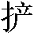

第五回 小霸王醉入销金帐 花和尚大闹桃花村
正文
诗曰：
yì zài chán lín 《义在禅林》 míng shī nài ān ——明·施耐庵 chán lín cí qù rù chán lín ， zhī jǐ xiāng féng yì duàn jīn 。 禅林1辞去入禅林，知己相逢义断金。 qiě bǎ wēi fēng jīng zéi dǎn ， mán jiāng miào lǐ yuè chán xīn 。 且把威风惊贼胆，谩2将妙理3悦禅心4。 chuò míng jiǔ huàn huā hé shàng ， dào hào qīn míng lǔ zhì shēn 。 绰名久唤花和尚，道号亲名5鲁智深。 sú yuàn le shí zhōng zhèng guǒ ， yǎn qián zhēng nài méi zhī yīn 。 俗愿了时终证果，眼前争奈6没知音。
话说当日智真长老道：”智深，你此间决不可住了。我有一个师弟，见在东京7大相国寺住持8，唤做智清禅师。我与你这封书去投他那里，讨个职事僧9做。我夜来看了，赠汝四句偈言，你可终身受用，记取今日之言。”智深跪下道：”洒家愿听偈言。”长老道：
“遇林而起，遇山而富，遇水而兴，遇江而止。”
鲁智深听了四句偈言，拜了长老九拜，背了包裹、腰包、肚包10，藏了书信，辞了长老并众僧人，离了五台山，径到铁匠间壁客店里歇了，等候打了禅杖、戒刀，完备就行。寺内众僧得鲁智深去了，无一个不欢喜。长老教火工道人自来收拾打坏了的金刚、亭子。过不得数日，赵员外自将若干钱物来五台山，再塑起金刚，重修起半山亭子，不在话下。
再说这鲁智深就11客店里住了几日，等得两件家生都已完备，做了刀鞘，把戒刀插放鞘内，禅杖却把漆来裹了。将些碎银子赏了铁匠，背了包裹，跨了戒刀，提了禅杖，作别了客店主人并铁匠，行程12上路。过往人13看了，果然是个莽和尚。但见：
皂直裰背穿双袖，青圆绦斜绾双头。戒刀灿三尺春冰14，深藏鞘内；禅杖挥一条玉蟒，横在肩头。鹭鸶15腿紧系脚絣16，蜘蛛肚牢拴衣钵。嘴缝边攒17千条断头铁线，胸脯上露一带盖胆寒毛。生成食肉餐鱼脸，不是看经念佛人。
且说鲁智深自离了五台山文殊院，取路投东京来，行了半月之上。于路不投寺院去歇，只是客店内打火安身，白日间酒肆里买吃。在路免不得饥餐渴饮，夜住晓行。一日正行之间，贪看山明水秀，不觉天色已晚。但见：
山影深沉，槐阴渐没。绿杨影里，时闻鸟雀归林；红杏村中，每见牛羊入圈。落日带烟生碧雾，断霞映水散红光。溪边钓叟移舟去，野外村童跨犊归。
鲁智深因见山水秀丽，贪行了半日，赶不上宿头，路中又没人作伴，那里投宿是好。又赶了三二十里田地，过了一条板桥18，远远地望见一簇红霞，树木丛中闪着一所庄院，庄后重重叠叠都是乱山。鲁智深道：”只得投庄上去借宿。”径奔到庄前看时，见数十个庄家忙忙急急搬东搬西。鲁智深到庄前，倚了禅杖，与庄客打个问讯。庄客道：”和尚，日晚来我庄上做甚的？”智深道：”小僧赶不上宿头，欲借贵庄投宿一宵，明早便行。”庄客道：”我庄上今夜有事，歇不得。”智深道：”胡乱借洒家歇一夜，明日便行。”庄客道：”和尚快走，休在这里讨死。”智深道：”也是怪哉！歇一夜打甚么不紧，怎地便是讨死？”庄家道：”去便去，不去时便捉来缚在这里。”鲁智深大怒道：”你这厮19村人，好没道理。俺又不曾说甚的，便要绑缚洒家。”庄家们也有骂的，也有劝的。鲁智深提起禅杖，却待要发作，只见庄里走出一个老人来。但见：
髭须似雪，发鬓如霜。行时肩曲头低，坐后耳聋眼暗。头裹三山20暖帽21，足穿四缝宽靴22。腰间绦系佛头青23，身上罗衫24鱼肚白25。好似山前都土地26，正如海底老龙君。
那老人年近六旬之上，拄一条过头拄杖，走将出来，喝问庄客：”你们闹甚么？”庄客道：”可奈27这个和尚要打我们。”智深便道：”小僧是五台山来的和尚，要上东京去干事，今晚赶不上宿头28，借贵庄投宿一宵。庄家29那厮无礼，要绑缚洒家。”那老人道：”既是五台山来的僧人，随我进来。”智深跟那老人直到正堂30上，分宾主坐下。那老人道：”师父休要怪，庄家们不省得师父是活佛去处31来的，他作繁华一例32相看。老汉从来敬重佛天三宝33，虽是我庄上今夜有事，权且留师父歇一宵了去。”智深将禅杖倚了，起身打个问讯，谢道：”感承施主。小僧不敢动问贵庄高姓？”老人道：”老汉姓刘，此间唤做桃花村，乡人都叫老汉做桃花庄刘太公。敢问师父俗姓，唤做甚么讳字？”智深道：”俺的师父是智真长老，与俺取了个讳字，因洒家姓鲁，唤做鲁智深。”太公道：”师父请吃些晚饭，不知肯吃荤腥也不？”鲁智深道：”洒家不忌荤酒，遮莫34甚么浑清白酒，都不拣选35；牛肉狗肉，但有便吃。”太公道：”既然师父不忌荤酒，先叫庄客取酒肉来。”没多时，庄客掇36张桌子，放下一盘牛肉，三四样菜蔬，一双箸，放在鲁智深面前。智深解下腰包、肚包坐定。那庄客旋了一壶酒37，拿一只盏子筛下酒38，与智深吃。这鲁智深也不谦让，也不推辞，无一时，一壶酒、一盘肉都吃了。太公对席看见，呆了半晌。庄客搬饭来，又吃了。
抬过桌子，太公分付道：”胡乱教师父在外面耳房中歇一宵，夜间如若外面热闹，不可出来窥望。”智深道：”敢问贵庄今夜有甚事？”太公道：”非是你出家人闲管39的事。”智深道：”太公缘何模样不甚喜欢，莫不怪小僧来搅扰你么？明日洒家算还你房钱便了。”太公道：”师父听说，我家如常40斋僧41布施42，那争师父一个。只是我家今夜小女招夫，以此烦恼。”鲁智深呵呵大笑道：”男大须婚，女大必嫁。这是人伦大事，五常之礼，何故烦恼？”太公道：”师父不知，这头亲事不是情愿与的。”智深大笑道：”太公，你也是个痴汉，既然不两相情愿，如何招赘43做个女婿？”太公道：”老汉止有这个小女，今年方得一十九岁。被此间有座山，唤做桃花山，近来山上有两个大王，扎了寨栅44，聚集着五七百人，打家劫舍。此间青州45官军捕盗46，禁他不得。因来老汉庄上讨进奉47，见了老汉女儿，撇下二十两金子，一匹红锦为定礼48，选着今夜好日，晚间49来入赘50老汉庄上。又和他争执不得，只得与他，因此烦恼。非是争51师父一个人。”智深听了道：”原来如此！小僧有个道理，教他回心转意，不要娶你女儿如何？”太公道：”他是个杀人不眨眼魔君，你如何能勾得他回心转意？”智深道：”洒家在五台山真长老处，学得说因缘52，便是铁石人也劝得他转。今晚可教你女儿别处藏了，俺就你女儿房内说因缘劝他，便回心转意。”太公道：”好却甚好，只是不要捋53虎须。”智深道：”洒家的不是性命？你只依着俺行，并不要说有洒家。”太公道：”却是好也，我家有福，得遇这个活佛下降！”庄客听得，都吃一惊。
太公问智深：”再要饭吃么？”智深道：”饭便不要吃，有酒再将些来吃。”太公道：”有，有。”随即叫庄客取一只熟鹅，大碗斟将酒来，叫智深尽意54吃了三二十碗，那只熟鹅也吃了。叫庄客将了包裹，先安放房里，提了禅杖，带了戒刀，问道：”太公，你的女儿躲过了不曾？”太公道：”老汉已把女儿寄送在邻舍庄里去了。”智深道：”引洒家新妇房内去。”太公引至房边，指道：”这里面便是。”智深道：”你们自去躲了。”太公与众庄客自出外面，安排筵席。智深把房中一椅独桌都掇过了，将戒刀放在床头，禅杖把来倚在床边，把销金55帐子下了，脱得赤条条地，跳上床去坐了。
太公见天色看看黑了，叫庄客前后点起灯烛荧煌56，就打麦场上放下一条桌子，上面摆着香花灯烛。一面叫庄客大盘盛着肉，大壶温着酒。约莫初更时分，只听得山边锣鸣鼓响。这刘太公怀着鬼胎，庄家们都捏着两把汗，尽出庄门外看时，只见远远地四五十火把，照耀如同白日，一簇人马飞奔庄上来。但见：
雾锁青山影里，滚出一伙没头神；烟迷绿树林边，摆着几行争食鬼。人人凶恶，个个狰狞。头巾都戴茜根红57，衲袄58尽披枫叶赤。缨枪59对对，围遮60定吃人心肝的小魔王；梢棒61双双，簇捧着不养爹娘的真太岁62。高声齐道贺新郎，山上大虫来下马。
刘太公看见，便叫庄客大开庄门，前来迎接。只见前遮后拥，明晃晃的都是器械，旗枪尽把红绿绢帛63缚着，小喽啰头巾边乱插着野花。前面摆着四五对红纱灯笼，照着马上那个大王。怎生打扮？但见：
头戴撮尖64干红65凹面巾，鬓傍边插一枝罗帛66像生花67。上穿一领围虎体68挽绒金69绣绿罗袍，腰系一条称狼身70销金包肚红搭膊。着一双对掩云跟71牛皮靴，骑一匹高头卷毛大白马。
那大王来到庄前下了马，只见众小喽啰齐声贺道：”帽儿光光，今夜做个新郎。衣衫窄窄，今夜做个娇客。”刘太公慌忙亲捧台盏72，斟下一杯好酒，跪在地下。众庄客都跪着。那大王把手来扶道：”你是我的丈人，如何倒跪我？”太公道：”休说这话，老汉只是大王治下管的人户73。”那大王已有七八分醉了，呵呵大笑道：”我与你家做个女婿，也不亏负74了你。你的女儿匹配我，也好。我的哥哥大头领不下山来，教传示75你。”刘太公把了下马杯76。来到打麦场上，见了香花灯烛，便道：”泰山何须如此迎接？”那里又饮了三杯，来到厅上，唤小喽啰教把马去系在绿杨树上。小喽啰把鼓乐就厅前擂将起来，大王上厅坐下，叫道：”丈人，我的夫人在那里？”太公道：”便是怕羞，不敢出来。”大王笑道：”且将酒来，我与丈人回敬。”那大王把了一杯，便道：”我且和夫人厮见了，却来吃酒未迟。”那刘太公一心只要那和尚劝他，便道：”老汉自引大王去。”拿了烛台，引着大王，转入屏风背后，直到新人房前。太公指与道：”此间便是，请大王自入去。”太公拿了烛台，一直去了。未知凶吉如何，先办一条走路77。
那大王推开房门，见里面黑洞洞地。大王道：”你看我那丈人是个做家78的人，房里也不点碗灯，由我那夫人黑地里79坐地。明日叫小喽啰山寨里扛一桶好油来与他点。”鲁智深坐在帐子里都听得，忍住笑不做一声。那大王摸进房中，叫道：”娘子，你如何不出来接我？你休要怕羞，我明日要你做压寨夫人80。”一头叫娘子，一面摸来摸去。一摸摸着销金帐子，便揭起来，探一只手入去摸时，摸着鲁智深的肚皮，被鲁智深就势劈头巾带角儿揪住，一按按将下床来。那大王却待挣扎，鲁智深把右手捏起拳头，骂一声：”直娘贼！”连耳根带脖子只一拳。那大王叫一声：”做甚么便打老公？”鲁智深喝道：”教你认的老婆！”拖倒在床边，拳头脚尖一齐上，打得大王叫救人。刘太公惊得呆了：只道这早晚81正说因缘劝那大王，却听的里面叫救人。太公慌忙把着灯烛，引了小喽啰，一齐抢将入来。众人灯下打一看时，只见一个胖大和尚，赤条条不着一丝，骑翻大王在床面前打。为头的小喽啰叫道：”你众人都来救大王。”众小喽啰一齐拖枪拽棒，打将入来救时，鲁智深见了，撇下大王，床边绰82了禅杖，着地83打将出来。小喽啰见来得凶猛，发声喊，都走了。刘太公只管叫苦。打闹里，那大王扒出房门，奔到门前，摸着空马，树上折枝柳条，托地84跳在马背上，把柳条便打那马，却跑不去。大王道：”苦也！畜生也来欺负我。”再看时，原来心慌不曾解得缰绳，连忙扯断了，骑着马85飞走。出得庄门，大骂刘太公：”老驴86休慌！不怕你飞了。”把马打上两柳条，不喇喇87地驮了大王上山去。
刘太公扯住鲁智深道：”和尚，你苦了老汉一家儿了。”鲁智深说道：”休怪无礼也。且取衣服和直裰来，洒家穿了说话。”庄家去房里取来，智深穿了。太公道：”我当初只指望你说因缘，劝他回心转意，谁想你便下拳打他这一顿。定是去报山寨里大队强人来杀我家。”智深道：”太公休慌。俺说与你，洒家不是别人，俺是延安府老种经略相公帐前提辖88官，为因打死了人，出家做和尚。休道这两个鸟人，便是一二千军马来，洒家也不怕他。你们众人不信时，提俺禅杖看。”庄客们那里提得动。智深接过来手里，一似捻89灯草90一般使起来。太公道：”师父休要走了去，却要救护我们一家儿使得91。”智深道：”甚么闲话！俺死也不走。”太公道：”且92将些酒来师父吃，休得93要抵死94醉了。”鲁智深道：”洒家一分酒只有一分本事，十分酒便有十分的气力。”太公道：”恁地时最好。我这里有的是酒肉，只顾教师父吃。”
且说这桃花山大头领坐在寨里，正欲差人下山来探听做女婿的二头领如何，只见数个小喽啰，气急败坏，走到山寨里叫道：”苦也，苦也！”大头领连忙问道：”有甚么事，慌做一团？”小喽啰道：”二哥哥吃打坏了95。”大头领大惊，正问备细，只见报道：”二哥哥来了。”大头领看时，只见二头领红巾也没了，身上绿袍扯得粉碎，下得马，倒在厅前，口里说道：”哥哥救我一救。”大头领问道：”怎么来？”二头领道：”兄弟下得山，到他庄上，入进房里去。叵耐那老驴把女儿藏过了，却教一个胖和尚躲在他女儿床上。我却不提防，揭起帐子摸一摸，吃那厮揪住，一顿拳头脚尖，打得一身伤损96。那厮见众人入来救应97，放了手，提起禅杖，打将出去。因此我得脱了身，拾得性命。哥哥与我做主报仇。”大头领道：”原来恁地。你去房中将息，我与你去拿那贼秃来。”喝叫左右：”快备我的马来。众小喽啰都去。”大头领上了马，绰枪在手，尽数98引了小喽啰，一齐呐喊，下山去了。
再说鲁智深正吃酒哩，庄客报道：”山上大头领尽数都来了。”智深道：”你等休慌，洒家但打翻的，你们只顾缚了，解去官司99请赏。取俺的戒刀来。”鲁智深把直裰脱了，拽扎起下面衣服，跨了戒刀，大踏步提了禅杖，出到打麦场上。只见大头领在火把丛中，一骑马抢到庄前，马上挺着长枪，高声喝道：”那秃驴在那里，早早出来决个胜负。”鲁智深大怒，骂道：”腌臜100打脊101泼才102，叫你认得洒家。”轮起禅杖，着地卷将来。那大头领逼住枪，大叫道：”和尚且休要动手，你的声音好厮103熟。你且92通个姓名。”鲁智深道：”洒家不是别人，老种经略相公帐前提辖鲁达的便是。如今出了家做和尚，唤做鲁智深。”那大头领呵呵大笑，滚鞍104下马，撇了枪，扑翻身105便拜道：”哥哥别来无恙，可知二哥着了你手。”鲁智深只道赚他，托地跳退数步，把禅杖收住，定睛看时，火把下认得不是别人，却是江湖上使枪棒卖药的教头打虎将李忠。原来强人下拜，不说此二字，为军中不利，只唤做”剪拂106“，此乃吉利的字样。李忠当下剪拂了起来，扶住鲁智深道：”哥哥缘何做了和尚？”智深道：”且和你到里面说话。”刘太公见了，又只叫苦：”这和尚原来也是一路。”
鲁智深到里面，再把直裰穿了，和李忠都到厅上叙旧。鲁智深坐在正面，唤刘太公出来。那老儿不敢向前，智深道：”太公休怕他，他是俺的兄弟。”李忠坐了第二位，太公坐了第三位。鲁智深道：”你二位在此。俺自从渭州三拳打死了镇关西，逃走到代州雁门县，因见了洒家赍发他的金老。那老儿不曾回东京去，却随个相识107也在雁门县住，他那个女儿就与了本处一个财主赵员外。和俺厮见了，好生108相敬。不想官司追捉的洒家要紧，那员外赔钱去送俺五台山智真长老处落发为僧。洒家因两番酒后闹了僧堂，本师长老与俺一封书，教洒家去东京大相国寺投托智清禅师，讨个职事僧做。因为天晚，到这庄上投宿，不想与兄弟相见。却才俺打的那汉是谁？你如何又在这里？”李忠道：”小弟自从那日与哥哥在渭州酒楼前同史进三人分散，次日听得说哥哥打死了郑屠，我去寻史进商议，他又不知投那里去了。小弟听得差人109缉捕，慌忙也走了。却从这山下经过。却才被哥哥打的那汉，先在这里桃花山扎寨，唤做小霸王周通。那时引人下山来，和小弟厮杀，被我赢了他，留小弟在山上为寨主，让第一把交椅教小弟坐了，以此在这里落草。”智深道：”既然兄弟在此，刘太公这头110亲事再也休题。他止有这个女儿，要养终身。不争111112被你把113了去，教他老人家失所114。”太公见说了，大喜，安排酒食出来，管待二位。小喽啰们每人两个馒头，两块肉，一大碗酒，都教吃饱了。太公将出原定的金子段匹115，鲁智深道：”李忠兄弟，你与他收了去，这件事都在你身上。”李忠道：”这个不妨事。且请哥哥去小寨住几时，刘太公也走一遭。”太公叫庄客安排轿子，抬了鲁智深，带了禅杖、戒刀、行李，李忠也上了马，太公也坐了一乘小轿，却早天色大明。
众人上山来，智深、太公到得寨前，下了轿子，李忠也下了马，邀请智深入到寨中，向这聚义厅上三人坐定。李忠叫请周通出来。周通见了和尚，心中怒道：”哥哥却不与我报仇，倒请他来寨里，让他上面坐。”李忠道：”兄弟，你认得这和尚么？”周通道：”我若认得他时，却不吃他打了。”李忠笑道：”这和尚便是我日常和你说的，三拳打死镇关西的便是他。”周通把头摸一摸，叫声：”呵呀！”扑翻身便剪拂。鲁智深答礼道：”休怪冲撞。”三个坐定，刘太公立在面前。鲁智深便道：”周家兄弟，你来听俺说。刘太公这头亲事，你却不知，他只有这个女儿养老送终，承祀116香火117，都在他身上。你若娶了，教他老人家失所，他心里怕不情愿。你依着洒家，把来118弃了，别选一个好的。原定的金子段匹，将在这里。你心下如何？”周通道：”并听大哥言语，兄弟再不敢登门。”智深道：”大丈夫作事，却休要翻悔119。”周通折箭为誓。刘太公拜谢了，纳还120金子段匹，自下山回庄去了。
李忠、周通椎牛121宰马，安排筵席，管待了数日。引鲁智深山前山后，观看景致，果是好座桃花山，生得凶怪，四围122险峻，单单只一条路上去，四下里漫漫都是乱草。智深看了道：”果然好险隘123去处。”住了几日，鲁智深见李忠、周通不是个慷慨之人，作事悭吝124，只要下山。两个苦留，那里肯住，只推道：”俺如今既出了家，如何肯落草。”李忠、周通道：”哥哥既然不肯落草，要去时，我等明日下山，但得多少，尽送与哥哥作路费。”次日，山寨里一面杀羊宰猪，且做送路125筵席，安排整顿，却将金银酒器设放126在桌上。正待入席饮酒，只见小喽啰报来：”见山下有两辆车，十数个人来也。”李忠、周通见报了，点起众多小喽啰，只留一两个伏侍127鲁智深饮酒。两个好汉道：”哥哥只顾请自在吃两杯，我两个下山去取得财来，就与哥哥送行。”分付已罢，引领众人下山去了。
且说这鲁智深寻思道：”这两个人好生悭吝，见放着有许多金银，却不送与俺，直等他去打劫得别人的送与洒家。这个不是把官路128当人情，只苦别人！洒家且教这厮吃俺一惊。”便唤这几个小喽啰近前来筛酒吃，方才吃得两盏，跳起身来，两拳打翻两个小喽啰，便解搭膊，做一块儿捆了，口里都塞了些麻核桃129130。便取出包裹打开，没要紧的都撇了，只拿了桌上金银酒器，都踏匾131了，拴在包里，胸前度牒袋内，藏了真长老的书信，跨132了戒刀，提了禅杖，顶了衣包133，便出寨来。到后山打一望时，都是险峻之处，又没深草存躲。”洒家从前山去时，一定吃那厮134们撞见，不如就此间滚将下去。”先把戒刀和包裹拴了，望下丢落去，又把禅杖也撺落135去，却把身望下只一滚，骨碌碌直滚到山脚边，并无伤损。鲁智深跳将起来，寻了包裹，跨了戒刀，拿了禅杖，拽开136脚手137，投东京便走。
再说李忠、周通下到山边，正迎着那数十个人，各有器械。李忠、周通挺着枪，小喽啰呐着喊，抢向前来，喝道：”兀那138客人，会事的139留下买路钱！”那客人内有一个便捻89着朴刀来斗李忠，一来一往，一去一回，斗了十馀合，不分胜负。周通大怒，赶向前来，喝一声，众小喽啰一齐都上。那伙客人抵当不住，转身便走，有那走得迟的，尽被搠140死七八个。劫了车子财物，和着凯歌，慢慢地上山来。到得寨里，打一看时，只见两个小喽啰捆做一块在亭柱边，桌子上金银酒器都不见了。周通解了小喽啰，问其备细：”鲁智深那里去了？”小喽啰说道：”把我两个打翻捆缚了，卷了若干器皿，都拿了去。”周通道：”这贼秃不是好人，倒着了那厮手脚。却从那里去了？”团团141寻踪迹到后山，见一带草木平平地都滚倒了。周通看了道：”这秃驴倒是个老贼，这般险峻山冈，从这里滚了下去。”李忠道：”我们赶上去问他讨，也羞那厮一场。”周通道：”罢，罢！贼去了关门，那里去赶！便赶得着时，也问他取不成。倘有些不然142起来，我和你又敌他不过，后来倒难厮见了。不如罢手，后来倒好相见。我们且自把车子上包裹打开，将金银段匹分作三分，我和你各捉一分，一分赏了众小喽啰。”李忠道：”是我不合143引他上山，折了你许多东西，我的这一分都与了你。”周通道：”哥哥，我和你同死同生，休恁地计较。”看官144牢记话头145，这李忠、周通自在桃花山打劫。
再说鲁智深离了桃花山，放开脚步，从早晨直走到午后，约莫走了五六十里多路，肚里又饥，路上又没个打火146处，寻思：”早起只顾贪走，不曾吃得些东西，却投那里去好？”东观西望，猛然听得远远地铃铎147之声。鲁智深听得道：”好了！不是寺院，便是宫观148，风吹得檐前铃铎之声，洒家且寻去那里投斋149。”
不是鲁智深投那个去处，有分教：到那里断送了十馀条性命生灵，一把火烧了有名的灵山150古迹。直教黄金殿上生红焰，碧玉堂前起黑烟。毕竟鲁智深投甚么寺观151来，且听下回分解。
读后感
《读〈第五回 小霸王醉入销金帐 花和尚大闹桃花村〉有感》
鲁智深因为两次醉酒后大闹五台山，被智真长老要求前往东京大相国寺找智清禅师。他在途中投宿桃花庄，从刘太公那里得知有山贼要强娶其女儿，便决定帮忙。等到山贼来迎亲时，鲁智深假扮成刘太公的女儿，狠狠地揍了山贼一顿。山贼逃回山寨后，大头领很吃惊，马上带着众人去报仇。没想到一见到鲁智深，就立刻下马跪拜，原来这人是李忠，而那个山贼是他的二把手周通，外号叫小霸王。
鲁智深要求周通不要再提这门亲事，周通自然不敢有半点不同意，只能答应并且发誓。鲁智深在桃花山李忠的寨子里待了几天，觉得李忠和周通很吝啬。于是他告辞离开，李忠和周通说要去打劫然后送礼物给他。趁他们走后，鲁智深把桌子上所有的金银器皿都踩扁了带走。
这一回让我们看到了鲁智深的豪爽和正义感，他毫不犹豫地帮助刘太公解决难题，惩治了山贼。对李忠和周通的吝啬的不满，也再次突出了他豪爽的性格。
解释下面的脚注：
-
禅林: 【chán lín】 指寺院。僧徒聚居之处。 ↩
-
谩: 【màn】 轻蔑，没有礼貌：～骂。【mán】 欺骗；蒙蔽。 ↩
-
妙理: 【miào lǐ】精微的道理。 ↩
-
禅心: 【chán xīn】 佛教用语。谓清静寂定的心境。 ↩
-
亲名: (AI) 【qīn míng】正式的名字或本人的名字。这里指鲁智深正式的法号名字。 ↩
-
争奈: 【zhēng nài】 怎奈；无奈。 ↩
-
东京: 【dōng jīng】 1. 古都名。指洛阳 。即今 河南省 洛阳 市。 😄 2. 古都名。指 汴州 。即今 河南省 开封市 。 😄 3. 代指东汉 。 ↩
-
住持: 【zhù chí】 1. 佛教语。久住护持佛法的意思。 😄 2. 佛教寺院主管僧的职称。起于禅宗。也称“方丈”。后道教亦用此制，称道观之主持者。 😄 3. 指担任住持。 😄 4. 特指僧人居住在寺院中修行。 ↩
-
职事僧: 【无拼音信息】 职事僧是一个汉语词语，拼音是zhí shì sēng，意思是寺院中分管各项职务的僧人。 ↩
-
肚包: 【dù bāo】系在腹部用以盛钱或什物的布袋。 ↩
-
就: 【jiù】 1. 凑近；靠近：迁～。避难～易。 😄 2. 到；开始从事：～位。～业。～寝。～学。～职。 😄 3. 被；受：～歼。～擒。 😄 4. 完成；确定：成～。功成名～。生铁铸～的，不容易拆掉。 😄 5. 趁着（当前的便利）；借着（有时跟“着”字连用）：～便。～近。～手儿。～着灯光看书。 😄 6. 一边儿是菜蔬、果品等，一边儿是主食或酒，两者搭着吃或喝：花生仁儿～酒。 😄 7. 表示动作的对象或话题的范围：他们～这个问题进行了讨论。～工作经验来说，他比别人要丰富些。 😄 8. 表示在很短的时间以内：我～来。您稍等一会儿，饭～好了。 😄 9. 表示事情发生得早或结束得早：他十五岁～参加革命了。大风早晨～住了。 😄 10. 表示前后事情紧接着：想起来～说。卸下了行李，我们～到车间去了。 😄 11. 表示在某种条件或情况下自然怎么样（前面常用“只要、要是、既然”等或者含有这类意思）：只要用功，～能学好。他要是不来，我～去找他。谁愿意去，谁～去。 😄 12. 表示对比起来数目大，次数多，能力强等：你们两个小组一共才十个人，我们一个小组～十个人。他三天才来一次，你一天～来三次。这块大石头两个人抬都没抬起来，他一个人～把它背走了。 😄 13. 放在两个相同的成分之间，表示容忍：大点儿～大点儿吧，买下算了。 😄 14. 仅仅；只：以前～他一个人知道，现在大家都知道了。 😄 15. 表示加强肯定：我～知道他会来的，今天他果然来了。我～不信我学不会。那～是他的家。幼儿园～在这个胡同里。 😄 16. 表示假设的让步，跟“就是”2相同：你～送来，我也不要。 ↩
-
行程: 【xíng chéng】 1. 上路；就道。 😄 2. 路程；旅程。 😄 3. 犹行装。 ↩
-
过往人: (AI) 【guò wǎng rén】路过的人。文中描述鲁智深的样子时提到过往人对他的看法，体现其形象引人注目。 ↩
-
春冰: 【chūn bīng】 春天的冰。因其薄而易裂，多喻指危险的境地或容易消失的事物。 ↩
-
鹭鸶: 【lù sī】动物名。鸟纲鹳鹭目。羽毛洁白，脚高颈长嘴尖，夏季头顶处生纯白色长毛。常栖息在沼泽地区，以水中的鱼类、水生动物和昆虫为食物。大量啄食田中害虫，是一种益鸟。也称为「白鹭」、「白鹭鸶」、「老等」。 ↩
-
脚絣: 【jiǎo bēng】 犹裹腿。缠在腿上的布条。 ↩
-
攒: 【zǎn】 积聚；储蓄：～粪。～钱。【cuán】 1. 凑集；聚拢：～聚。～土。 😄 2. 用现成的零件自行拼装：～一辆自行车。我这台电脑是自己～的。 ↩
-
板桥: 【bǎn qiáo】1.用木板架设的桥。《水浒传》第五回：「又赶了三二十里田地，过了一条板桥，远远地望见一簇红霞。」《老残游记》第八回：「惟有中间一线河身，土人架了一个板桥，不过数丈长的光景。」 😄 2.地名。隶属新北市板桥区，位于台北市西南、淡水河东岸，纵贯铁路经此，为市政府所在地。境内有林家花园，为著名的园林古迹。 😄 3.清人郑燮的号。参见「郑燮」条。 ↩
-
厮: 【sī】 1. 男性仆人（多见于早期白话，下同）：小～。 😄 2. 对人轻视的称呼：这～。那～。 😄 3. 互相（多见于早期白话）：～打。～杀。～混。 ↩
-
三山: 【sān shān】1.传说中的海上三神山。晋王嘉《拾遗记．高辛》:”三壶，则海中三山也。一曰方壶，则方丈也;二曰蓬壶，则蓬莱也;三曰瀛壶，则瀛洲也。” 2.福州的别称。福州城中西有闽山，东有九仙山，北有越王山，故福州又称三山。见宋曾巩《道山亭记》。 3.冠名。 4.指三山骨。 5.喻封建主义﹑官僚资本主义﹑帝国主义三重压迫。 ↩
-
暖帽: 【nuǎn mào】1.冬天所戴的帽子。 2.清制，官吏冠服分暖帽﹑凉帽，按例于立冬前数日换戴暖帽。 ↩
-
宽靴: (AI) 【kuān xuē】比较宽大的靴子。对鲁智深穿着的描述，展现其服饰特点。 ↩
-
佛头青: 【fó tóu qīng】 1. 相传佛发为青色，故以“佛头青”比喻青黛色的山峦。 😄 2. 石青的一种。可用为染料和绘画颜料。 ↩
-
罗衫: 【luó shān】 丝织衣衫。 ↩
-
鱼肚白: 【yú dù bái】 1. 白里透青像鱼肚子的颜色。 😄 2. 指黎明时东方天色。 😄 3. 清初，余怀、杜濬、白仲调三人同居金陵，时人以市语谐三人姓氏之音，呼为“魚肚白”。 ↩
-
都土地: AI 指土地神。 ↩
-
可奈——怎奈。和第一回的”叵耐”用法相同。 ↩
-
宿头: 【sù tóu】 借宿之处。 ↩
-
庄家: 【zhuāng jiā】 1. 庄稼人；农家。 😄 2. 赌博或某些牌戏中每一局的主持人。 😄 3. 庄稼。 ↩
-
正堂: 【zhèng táng】 1. 正殿、正厅。 😄 2. 正堂，汉语词汇，释义为正屋。听政大堂。明清时对府县等地方正印官的称呼。正室，嫡妻。 ↩
-
活佛去处——去处，指地方。佛教的说法：有佛祖在五台山修行得道，那里是圣地。因之，信佛教的都说那里是有活佛的地方。 ↩
-
一例: 【yī lì】 1. 一种规则或体制。 😄 2. 一律；同等。 😄 3. 犹言照例。 😄 4. 一个例证。 😄 5. 一起。 ↩
-
佛天三宝——佛教中指佛、佛法经典、僧人为三宝。 ↩
-
遮莫: 【zhē mò】1.亦作”遮末”。 2.尽管;任凭。 3.不论;不管。 4.即使;假如。 5.莫要;不必。 6.什么;为何。 7.莫非;或许。 8.大约;约摸。 ↩
-
拣选: 【jiǎn xuǎn】 1. 挑选。 😄 2. 清代官制用语。谓在官员中选择任用。 ↩
-
掇: 【duō】 1. 拾取；摘取：～拾。 😄 2. 〈方〉用双手拿（椅子、凳子等）。 ↩
-
旋酒——烫酒。 ↩
-
筛酒——斟酒。 ↩
-
闲管: 【xián guǎn】1.亦作”闲管”。 2.管与己无关的事。 ↩
-
如常: 【rú cháng】 1. 照常。 😄 2. 平常。 ↩
-
斋僧: 【zhāi sēng】 1. 谓以斋食施给僧人。 😄 2. 设斋食以供养僧人。 ↩
-
布施: 【bù shī】 1. 施予；施舍。谓施恩惠于人。 😄 2. 犹普施。谓普遍施予。 😄 3. 佛教传入中国后，以“布施”为梵文Dana（檀那）的意译词，故特指向僧道施舍财物或斋食。 😄 4. 指施舍给人的财物或恩惠。 😄 5. 公布施行；施行。 😄 6. 施展。 😄 7. 把财物等施舍给别人。 ↩
-
招赘: 【zhāo zhuì】 招女婿。 ↩
-
寨栅: 【无拼音信息】 寨栅，汉语词汇。拼音：zhài zhà 释义：四周有栅栏的寨子。 ↩
-
青州: 【qīng zhōu】1.古九州之一。 2.州﹑府名。汉置青州。魏及晋初因之。南北朝仍置州﹐治所屡迁﹐辖领不一。隋废。唐初复置州﹐后改平卢军节度使。五代及宋因之。元改益都路。明改为青州府﹐清因之。旧治在今山东省青州市。参阅《嘉庆一统志．青州府》。 3.见”青州从事”。 ↩
-
捕盗: 【无拼音信息】 捕盗，是网易游戏《大唐豪侠外传》的活动。此活动对所有玩家开放。玩家根据提示，击败游戏中设置的人物后，会得到相应的游戏奖励。 ↩
-
进奉: 【jìn fèng】 1. 犹进献。 😄 2. 指进献的财物。 ↩
-
定礼: 【dìng lǐ】 旧时订婚时男家送给女家的礼物或金钱。 ↩
-
晚间: 【wǎn jiān】日暮以后。《水浒传》第四五回：「哥哥放心自去。晚间兄弟替你料理。」《红楼梦》第六三回：「晚间吃酒，大家取乐，不可拘泥。」 ↩
-
入赘: 【rù zhuì】 男子就婚于女家并成为其家庭成员。 ↩
-
争: 【zhēng】 1. 因意见不一致而相互辩诘：～论。是非之～。 😄 2. 力求获得或达到：为祖国～光。力～上游。 😄 3. 竞争；争夺：～先恐后。只～朝夕。 😄 4. 疑问代词。怎么；如何（见于早期白话）：～奈。 ↩
-
因缘: 【yīn yuán】 1. 机会；缘分。 😄 2. 依据；凭借；攀附。 😄 3. 勾结。 😄 4. 罗织罪名，加以构陷。 😄 5. 牵合，比附。 😄 6. 发端；缘起。 😄 7. 原因。 😄 8. 佛教语。佛教谓使事物生起、变化和坏灭的主要条件为因，辅助条件为缘。 😄 9. 旧时常以宿世的“因缘”来解释人们今生的关系。犹言缘分。 😄 10. 关系。 😄 11. 姻缘。因，通“姻 ”。 😄 12. 同伴；朋友。 ↩
-
捋: 【lǚ】 用手指顺着抹过去，使物体顺溜或干净：～胡子。～麻绳。【luō】 用手握住条状物向一端滑动：～榆钱儿。～起袖子。 ↩
-
尽意: 【jìn yì】 1. 尽情的表达意见。 😄 2. 尽意jìnyì[fully express one’s feeling]∶充分表达心意、情感他这首诗尽意地抒发了思乡之情[enjoy oneself to the full]∶尽情;尽兴星期天尽意地玩了一天 ↩
-
销金: 【xiāo jīn】1.用金或金色敷贴装饰物品。《水浒传》第三四回：「都戴著一顶销金万字头巾，各跨一口腰刀。」《西游记》第一六回：「行者一一观之，都是些穿花纳锦、刺绣销金之物。」 😄 2.镕铄金属。北齐．刘昼《刘子．卷九．利害》：「销金在𬬻，盗者弗掬。」《文选．王融．三月三日曲水诗序》：「偃革辞轩，销金罢刃。」 😄 3.浪费金钱。元．周密《武林旧事．卷三．西湖游幸》：「西湖天下景，朝昏晴雨，四序总宜。杭人亦无时而不游，而春游特盛焉。……日糜金钱，靡有纪极。故杭谚有『销金锅儿』之号。」 ↩
-
荧煌: 【yíng huáng】闪耀辉煌。唐．李白〈明堂赋〉：「崇牙树羽，荧煌葳蕤。」《西游记》第四四回：「只听得那里吹打，悄悄的爬起来，穿了衣服，跳在空中观看，原来是正南上灯烛荧煌。」 ↩
-
茜根红: (AI) 【qiàn gēn hóng】一种红色，可能是用茜草根染成的颜色。用于描述小喽啰头巾的颜色。 ↩
-
衲袄: 【nà ǎo】一种斜襟的夹袄或棉袄。 ↩
-
缨枪: (AI) 【yīng qiāng】枪上带有缨穗的长枪。文中小喽啰所持武器，具有一定的装饰性和标识性。 ↩
-
围遮: (AI) 【wéi zhē】围绕、遮挡。形容小喽啰们拿着缨枪围绕排列的状态，有一定的防御或威慑意味。 ↩
-
梢棒: (AI) 【shāo bàng】一种棍棒。也是小喽啰们所持的武器，在古代常作为一种简易的武器或工具。 ↩
-
太岁: 【tài suì】 1. 古代天文学中假设的岁星。又称岁阴或太阴。古代认为岁星(即木星)十二年一周天(实为11．86年)，因将黄道分为十二等分，以岁星所在部分作为岁名。但岁星运行方向自西向东，与将黄道分为十二支的方向正相反，故假设有一太岁星作与岁星运行相反的方向运动，以每年太岁所在的部分来纪年。如太岁在寅叫摄提格，在卯叫单阏等。又配以十岁阳，组成六十干支，用以纪年。 😄 2. 指太岁之神。古代数术家认为太岁亦有岁神，凡太岁神所在之方位及与之相反的方位，均不可兴造、移徙和嫁娶、远行，犯者必凶。此说源于汉代，传至后世，说愈繁而禁愈严。 😄 3. 喻凶恶强暴的人。 ↩
-
绢帛: 【juàn bó】 古代丝织物的总称。 ↩
-
撮尖: (AI) 【cuō jiān】一种尖顶的形状，可能是指帽子顶部的形状。用于描述大王所戴头巾的样式。 ↩
-
干红: 【gàn hóng】深红色。 ↩
-
罗帛: (AI) 【luó bó】丝绸织物。这里指插在大王鬓旁的像生花的材质。 ↩
-
像生花: 【xiàng shēng huā】以纸、通草或塑胶等制成的人造花。因与真花相似，所以称为「像生花」。 ↩
-
围虎体: (AI) 【wéi hǔ tǐ】围绕身体像老虎的形态或有老虎图案。形容绿罗袍的样式或穿着效果，可能有威风凛凛的感觉。 ↩
-
挽绒金: (AI) 【wǎn róng jīn】可能是指用金色的绒线挽成的装饰或图案。用于描述绿罗袍上的装饰元素。 ↩
-
称狼身: (AI) 【chēng láng shēn】与狼身相称或类似狼身的形状。形容红搭膊的特点，也许是一种比较形象的表述其大小、形状等。 ↩
-
对掩云跟: (AI) 【duì yǎn yún gēn】一种鞋跟的样式，可能是指鞋跟相对且有像云纹等装饰或形状。描述大王所穿牛皮靴的特点。 ↩
-
台盏: 【tái zhǎn】 亦作“台琖”。有托的杯子。 ↩
-
人户: 【rén hù】民家。宋．苏轼〈论积欠六事并乞检会应诏所论四事一处行下状〉：「人户既未纳足，则追扰常在。」《老残游记》第一回：「西门看城中人户，烟雨万家。」 ↩
-
亏负: 【kuī fù】 亏蚀，亏本负债。 ↩
-
传示: 【chuán shì】 1. 留传示知；传达告知。 😄 2. 口信；书信。 ↩
-
下马杯: 【xià mǎ bēi】旧时客人抵达时，刚下马即敬酒一杯，以示欢迎，称为「下马杯」。《荡寇志》第一回：「这两位将军好了得，留守司与他们把了下马杯，簪了花。」 ↩
-
先办一条走路: (AI) 【xiān bàn yī tiáo zǒu lù】先准备一条逃跑的路或办法。刘太公担心鲁智深与大王冲突会带来不好的后果，所以提前有这种想法。 ↩
-
做家: 【zuò jiā】1.谓持家节俭。 2.成家立业。 ↩
-
黑地里: 【hēi dì lǐ】黑暗中。 ↩
-
压寨夫人: 【yā zhài fū rén】 1. 指山寨头领的妻子。 😄 2. 压寨夫人是一个汉语词汇，基本意思是指山寨头领的妻子。 ↩
-
这早晚: 【zhè zǎo wǎn】 亦作“这蚤晚 ”。犹言这个时候。常指时间晚。 ↩
-
绰: 【chāo】 [动] (1) 抓取 [grab] (2) 又如:绰起一根棍子 (3) 举起 [lif up]。如:绰起(立起，竖起) (4) 顺;应 [comply with;conform to]。如:绰经(趁势;顺势) (5) 另见 chuò;chuo 【chuò】 [形] (1) (形声。从糸( mì)，卓声。本义:宽大，舒缓) (2) 同本义 [ample;spacious;enough] (3) 又如:绰步(大步);绰板婆(大脚婆娘);绰绰(宽舒裕如) (4) 姿态柔美 [gentle] (5) 又如:绰态(柔媚多姿);绰俏(漂亮;俊俏) (6) 隐隐约约 [faintly]。如:绰见(瞧见，看见);绰注(琴声自下而上为绰，自上而下为注) (7) 端正 [upright] (8) 又如:绰立 【chuò】 [动] (1) 吹拂 [(of breeze) gently pass]。如:拂绰(拂拭);绰尘(拂拭尘土) (2) 搅乱 [confuse]。如:绰趣(逗乐);绰人眼光(搅乱视线) (3) 另见 chāo，chuo 【chuo】 (2) ——见“宽绰”( kuānchuo) (3) 另见 chāo，chuò ↩
-
着地: 【zhe dì】 落地。 ↩
-
托地: 【tuō de】 1. 犹霍地。一下子；很快。 😄 2. 依托大地。 ↩
-
马——没有鞍辔的光背马。 ↩
-
老驴: 【lǎo lǘ】詈词。谓人老而愚蠢如驴。 ↩
-
不喇喇: 【bù lǎ lǎ】 象声词。形容跑得飞快。 ↩
-
提辖: 【tí xiá】 1. 管领。 😄 2. 官名。 😄 3. 官名。 😄 4. 词语“提辖”，读作tí xiá，表示管领的意思，亦是古代官名。南宋时有“四提辖”的官制，四者分别掌管榷货务都茶场、杂买务杂卖场、文思院、左藏库。 ↩
-
捻: 【niǎn】 1. 用手指搓揉。 【组词】：捻绳、捻胡子 ◎ 😄 2. 用手指搓揉成的条状物。 【组词】：灯捻、纸捻、药捻子【niē】 古同“捏”，用拇指和其他手指夹住。 ↩ ↩2
-
灯草: 【dēng cǎo】 剥去外皮的灯心草的茎。白色多孔，质轻。可供点灯，也可入药。 ↩
-
使得: 【shǐ de】 1. 行，可以。亦常用为表示同意他人意见或应答他人之词。 😄 2. 致使。 😄 3. 可以使用。 ↩
-
且: 【qiě】 1. 暂时。姑且、得过且过 😄 2. 又、并。而且、既高且大 😄 3. 将、近。用于文言文。旦暮且下【jū】 1. 暂时。 【组词】：姑且、得过且过 😄 2. 又、并。 【组词】：而且、既高且大 😄 3. 将、近。用于文言文。 【组词】：旦暮且下 ↩ ↩2
-
休得: 【xiū de】不得;不要。 ↩
-
抵死: 【dǐ sǐ】①拼死；冒死(表示坚决)：抵死不从。②分外；格外：幸蒙晓月多情白，又遣东风抵死寒。③急促：春被梅花抵死催。④经常；总是：春泥抵死污人衣。⑤终究：如何媚容艳态，抵死孤欢偶。 ↩
-
吃打坏了: (AI) 【chī dǎ huài le】被打坏了、打伤了。描述二头领被鲁智深打的结果。 ↩
-
伤损: 【shāng sǔn】伤害、损害。唐．杜甫〈又观打鱼〉诗：「大鱼伤损皆垂头，屈强泥沙有时立。」《三国演义》第六八回：「只见枷锁尽落，左慈卧于地上，并无伤损。」 ↩
-
救应: 【jiù ying】 救援接应。 ↩
-
尽数: 【jìn shǔ】 1. 犹悉数，全部。 😄 2. 最大的数目；极限之数。 😄 3. 尽其所有，全部。 ↩
-
官司: 【guān si】 1. 普通官吏；百官。 😄 2. 官府。多指政府的主管部门。 😄 3. 指官府里摊派的赋税劳役之类的公事。 😄 4. 指诉讼。 😄 5. 引申为不同意见的争论。 😄 6. 方言。谓不耐烦不高兴的神色。 ↩
-
腌臜: 【ā za】 1. 脏；不干净。 😄 2. 谓使肮脏。 😄 3. 指脏物。 😄 4. 卑鄙；丑恶。常用于詈语。 😄 5. 恼人的；令人不快的。 😄 6. 作践；使难堪。 ↩
-
打脊——鞭打脊背，是宋、元时肉刑的一种。这里是骂人的话，该打的意思。 ↩
-
泼才: 【pō cái】 1. 顽劣无赖的人。 😄 2. 泼才（泼才）◎ 泼才pōcái[rascal] 无赖这个腌臢泼才…却原来这等欺负人。——《水浒传》 ↩
-
好厮: (AI) 【hǎo sī】很、非常。表示程度，形容声音很熟悉。 ↩
-
滚鞍: 【gǔn ān】从马鞍上迅速的翻滚下来。《三国演义》第一回：「玄德大惊，滚鞍下马，问其缘故。」 ↩
-
扑翻身: 【pū fān shēn】形容动作快速的俯身跪在地上。《水浒传》第四回：「老儿请下鲁提辖来，那官人扑翻身便拜道：『闻名不如见面，见面胜似闻名。义士提辖受礼。』」《喻世明言．卷一五．史弘肇龙虎君臣会》：「史弘肇认得是他结拜的哥哥，扑翻身便拜。」 ↩
-
剪拂: 【jiǎn fú】1.修整擦拭。比喻推崇，赞誉。 2.削除。 3.江湖隐语。谓行下拜礼。 ↩
-
相识: 【xiāng shí】 1. 彼此认识。 😄 2. 指彼此认识的人。 😄 3. 互相识别。 ↩
-
好生: 【hǎo shēng】 好生 (1) [exceedingly]∶多么 这个人好生奇怪 (2) [quite]∶很,极 好生面熟 (3) [carefully] 〈方〉∶好好儿地,小心地 好生拿着 ↩
-
差人: 【chāi rén chà rén】怪异的人。《南史．卷五○．刘𤩽传》：「刘郎子可谓差人，虽吾家平原诣张壮武，王粲谒伯喈，必无此对。」唐．韩偓〈两贤〉诗：「而今若有逃名者，应被品流呼差人。」 😄 【chāi rén chà rén】1.官府的衙役。《二刻拍案惊奇》卷二一：「睡到次日天明，来到店中看看，打发差人李彪出去探访，仍留王惠在店。」《儒林外史》第五回：「衙门里的差人，因妹丈有碗饭吃，他们做事，只拣有头发的抓，若说不管他，就更要的人紧了。」 😄 2.派人。《西游记》第二回：「朱俊引兵围住阳城攻打，一面差人打探皇甫嵩消息。」 ↩
-
头: 详细字义 头 【tóu】 名 (1) (形声。从页( xié)，豆声。页，人头。头在战国时期才出现，首出现较早。本义:首) (2) 同本义 [head] 本指人的头部，后也泛指各种动物的头部 头，首也。——《说文》 头者，神所居。——《春秋元命苞》 头容直。——《礼记·玉藻》 左头奉之。——《仪礼·士相见礼》 杀人者刎头。——《公羊传》注 王购子头千金。——晋· 干宝《搜神记》 将子头与剑来。 系向牛头充炭直。——唐· 白居易《卖炭翁》 举头望明月。——唐· 李白《静夜思》 低头思故乡。 又如:头直上(头顶上);光头(剃光的头;头上没有戴帽子);头大(形容遇到困难头昏脑胀的样子);头抵(敌对，对头。也作“头敌”、“敌头”);头足异处(头脚分离。指人被杀。也作“头足异所”);头昏脑闷(头脑昏晕。形容思虑不清) (3) 发，毛发 [hair]。 如:头须(束发的丝带);剃头;平头;头毛(头发);头白(老人发白。即白头);头发上指(形容盛怒);头发种种(形容老人头发短少) (4) 事情的开端 [beginning]。 如:起头;从头做起;头裹(开始);头阵(一切事情的开端或前段);头达(古代走在最前面的仪仗);头题(杂志目录中最前面的篇目);头讫(开端和结尾);头秋(秋收前的一段时间) (5) 物的两端或末梢 [end;top] 暮至黑山头。——明· 张溥《五人墓碑记》 既登峰头。——《徐霞客游记·游黄山记》 船头坐三人。——明· 魏学洢《核舟记》 又如:水头;梢头;桥头;露头;炕头儿;街头;弹头;杆头;床头 (6) 首领，头儿 [head;chief;boss]。 如:头目(首领;领导人);他是我们的头儿;头营(驻有指挥部的军营);头头脑脑(为首的人);头马(领头马);头儿脑儿(头面人物);头行人(带头的人) (7) 最上等级 [first-rate]。 如:头高(指欲望大，要价高);头房(客舍中的上等房间);头酒(最香醇的酒，指醑);头厅(古称中央的最高行政机构) (8) 第一，第一次 [first]。 如:头上末下(第一次);头食(第一道食品。指面粉);头阵(战斗时的第一次交锋);头纲(指第一批运送到京都的春茶);头筹(第一。较技时得第一称为得头筹) (9) 上一个 [last]。 如:头年;头天(前一天);头里(先前;事先) (10) 借代人 [person]。 如:头影(人影子);头役(旧时官府中的差役);头翁(旧时对官府差役的𫍲称) (11) 特指敌对的人 [enemy] 冤有头，债有主。——《五灯会元》 (12) 头部有发部分 [top] 头，首自发以上为头。——《六书故》 (13) 路;途径 [way]。 如:分头进军 (14) 赌博或买卖中抽的回扣 [commission] 凡有卖字画、古董物件的，俱要抽头。——《豆棚闲话》 词性变化 头 【tóu】 动 (1) 磕头 [kowtow]。旧时的一种跪拜礼 父亲母亲吩咐我，叫给舅母行礼，请舅母到厢房里坐下受头。——《儿女英雄传》 (2) 〈方〉∶临到;接近 [be near to]。 如:头吃饭要洗手;头五点就得动身 头 【tóu】 量 (1) 件，桩 [piece] 这头亲事，不是情愿与的。——《水浒传》 (2) 如∶多用以计算牲畜 潭中鱼可百许头。——唐· 柳宗元《至小丘西小石潭记》 以一头进。——《聊斋志异·促织》 每责一头。 捕得两三头。 又如:一头牛;三头猪 (3) 另见 tou 头 【tóu】 助 置于方位词后，表处所可不译。 路转溪头忽见。——宋· 辛弃疾《西江月》 惶恐滩头说惶恐。——宋· 文天祥《过零丁洋》 溪头卧剥莲蓬。——宋· 辛弃疾《清平乐·村居》 常用词组 头版头半天头寸头等头顶头兜头儿头发头发胡子一把抓头伏头功头骨头号头昏头昏脑胀头昏眼花头角头角峥嵘头巾头盔头里头脸头领头颅头路头面头面人物头名头目头脑头脑发胀头脑冷静头年头牛头牌头皮发麻头破血流头钱头前头秋头球头人头绳头虱头饰头水头套头疼头疼脑热头天头条头痛头痛医头，脚痛医脚头头头头是道头秃头陀头晚头尾头衔头像头囟儿头型头绪头癣头油头晕头胀头重头重脚轻头子头座 基本词义 头 【tou】 后缀 (2) 附在某些名词后面，构成新的名词。如:木头;石头 (3) 附在某些动词后面，构成名词。如:念头 (4) 附在形容词后面，构成名词。如:他越学越有甜头 (5) 附在方位后面，构成新的方位词。如:前头;后头;抽屉里头 (6) 另见 tóu 【汉典】 ↩
-
不争: 【bù zhēng】 1. 不计较。 😄 2. 不容争辩。 😄 3. 不仅；不只是。 😄 4. 若非。 😄 5. 一点不差。 😄 6. 只因为。 😄 7. 不争夺。 😄 8. 只不过。 😄 9. 不料。 😄 10. 却；却是。 😄 11. 不要紧，没关系。 😄 12. 如果。 😄 13. 不至于。 😄 14. 不论；莫说。 ↩
-
不争——这里是如果的意思。 ↩
-
把: 【bǎ】 1. 用手握住：～舵。两手～着冲锋枪。 😄 2. 从后面用手托起小孩儿两腿，让他大小便：～尿。 😄 3. 把持；把揽：要信任群众，不要把一切工作都～着不放手。 😄 4. 看守；把守：～大门。～住关口。 😄 5. 紧靠：～墙角儿站着。～着胡同口儿有个小饭馆。 😄 6. 约束住使不裂开：用铁叶子～住裂缝。 😄 7. 给（gěi） 😄 8. 车把：那辆车的～折（shé）了。 😄 9. 把东西扎在一起的捆子：草～。秫秸～。 😄 10. 姓。 😄 11. “把”的宾语都是确定的。b）用“把”的句子，动词后边有附加成分或补语，或前边有“一”等特种状语。但在诗歌戏曲里可以不带：扭转身来～话讲。c）用“把”的句子，动词后头一般不带宾语，但有时带：～衣服撕了个口子。～这两封信贴上邮票发出去。d）用“把”的句子，有时候后面不说出具体的动作，这种句子多半用在表示责怪或不满的场合：我～你个糊涂虫啊!e）近代汉语里“把”曾经有过“拿”的意思，现代方言里还有这种用法（“那个人不住地～眼睛看我”）。 😄 12. 加在“百、千、万”和“里、丈、顷、斤、个”等量词后头，表示数量近于这个单位数（前头不能再加数词）：个～月。百～块钱。斤～重。 😄 13. 指拜把子的关系：～兄。～嫂。【bà】 1. 器具上便于用手拿的部分：茶壶～儿。掸子～儿。 😄 2. 花、叶或果实的柄：花～儿。梨～儿。 ↩
-
失所: 【shī suǒ】 1. 谓不得其应处之所。 😄 2. 谓无存身之地。 😄 3. 失宜；失当。 ↩
-
段匹: 【duàn pǐ】1.亦作”段疋”。 2.成匹的缎子。 ↩
-
承祀: 【chéng sì】主持祭祀。指继承帝位。 ↩
-
香火: 【xiāng huǒ】 1. 香烛；香和灯火。 😄 2. 引申指供奉神佛之事。 😄 3. 借指供奉神佛之所。 😄 4. 指子孙祭祀祖先之事。借指后嗣。 😄 5. 谓燃点香。 😄 6. 燃着的香。 😄 7. 指主持香火的人。 😄 8. 指庙祝，庙宇中照料香火及打杂的人。 😄 9. 指誓约结盟时燃点香火。亦用以指结盟之交。 😄 10. 谓信奉佛法，共结香火之缘。参见“香火因缘”。 ↩
-
把来: 【bǎ lái】拿来。《朱子语类．卷九．论知行》：「须是自把来横看竖看，尽入深，尽有在。」《清平山堂话本．简贴和尚》：「官人教我把来与小娘子，又不交与你。」 ↩
-
翻悔: 【fān huǐ】 因后悔而推翻曾经允诺的事或说过的话。 ↩
-
纳还: 【nà huán】归还、送还。《初刻拍案惊奇》卷二三：「崔生知是闺中之物，急欲进去纳还。」 ↩
-
椎牛: 【chuí niú】 1. 谓击杀牛。 😄 2. 见“椎牛恨”。指亲人亡殁，不能奉养的痛苦。语本《韩诗外传》卷七：“是故椎牛而祭墓，不如鸡豚之逮亲存也。” ↩
-
四围: 【sì wéi】 1. 四面环绕。 😄 2. 四周，周围。 ↩
-
险隘: 【xiǎn ài】 1. 险要处。 😄 2. 比喻艰难险阻。 ↩
-
悭吝: 【qiān lìn】 亦作“ 慳悋 ”。亦作“ 慳恡 ”。吝啬。 ↩
-
送路: 【sòng lù】送行;饯行。唐贾岛有《送路》诗。 ↩
-
设放: 【shè fàng】 放置。 ↩
-
伏侍: 【fú shì】1.侍奉。《西游记》第一六回：「这个放心，暗中自有神灵保护，明中等我叫那些和尚伏侍。」《初刻拍案惊奇》卷二：「滴珠身伴要讨个丫鬟伏侍，曾对吴大郎说。」 😄 2.收拾。《水浒传》第四六回：「你与我拔了这贱人的头面，剥了衣裳，我亲自伏侍他。」 ↩
-
官路: 【guān lù】 1. 由官府集资开辟的道路。 😄 2. 官路，汉语词汇。拼音：guān lù。释义：1、官府修建的大道。2、仕途。 ↩
-
麻核桃: 【má hé táo】 指用麻绳打成的如核桃大小的结。 ↩
-
麻核桃——用粗麻绳打的结。 ↩
-
踏匾: (AI) 【tà biǎn】踩扁、踏扁。鲁智深把桌上金银酒器都弄扁了，方便携带，体现其行为的粗暴和随意。 ↩
-
跨: 【kuà】 [动] 1. 举步移动。 2. 乘、骑。 3. 越过。 4. 超出、胜过。 5. 兼及。 6. 统驭、占有。 7. 横架其上。 8. 悬挂、佩戴。 [名] 1. 两腿之间。 ↩
-
衣包: 【yī bāo】 1. 盛衣的包裹，多为行旅时所用。 😄 2. 指衣袋。 ↩
-
那厮: 【nà sī】那个人。含有鄙视、贱恶的意思。《西游记》第七三回：「我有个绣花针儿，能破那厮。」 ↩
-
撺落: (AI) 【cuān luò】扔落、抛下。鲁智深把禅杖扔下去，描述其动作。 ↩
-
拽开: (AI) 【zhuài kāi】拉开、扯开。鲁智深准备行动时的动作，拉开手脚准备离开。 ↩
-
脚手: 【jiǎo shǒu】 1. 脚与手。人的上下四肢。 😄 2. 犹手脚。谓暗中采取的行动。 😄 3. 犹爪牙。指能听候调遣者。 😄 4. 人为的痕迹。特指文辞手法。 😄 5. 角色。 😄 6. 脚上穿的手上戴的。指鞋袜，亦泛指穿戴的衣物。 😄 7. 指供脚踏手持的用具，如梯子、雨伞等。 ↩
-
兀那: 【wù nuó】 指示代词。犹那，那个。可指人、地或事。 ↩
-
会事的: (AI) 【huì shì de】懂事的、明白事理的。李忠、周通等人对过往客人的喊话，让懂事的客人留下买路钱。 ↩
-
搠: 【shuò】[动] 😄 1.刺、扎。《京本通俗小说．错斩崔宁》：「连搠一两刀，血流在地，眼见得老王养不大了。」《水浒传》第一○回：「林冲举手，肐察的一鎗，先搠倒差拨。」 😄 2.插、竖。元．无名氏《争报恩．楔子》：「忠义堂高搠杏黄旗一面，上写著替天行道宋公明。」《三国演义》第五一回：「只见女墙边虚搠旌旗，无人守护。」 😄 3.提、拿。元．无名氏《渔樵记》第二折：「则问那映雪的书生安在，便是冻苏秦也怎生去搠笔巡街！」《水浒传》第八七回：「小将军搠戟在手，勒马阵前，高声大叫。」 😄 4.摔、推。《初刻拍案惊奇》卷三：「那妇人将盘一搠，且不收拾。」 ↩
-
团团: 【tuán tuán】 1. 圆貌。 😄 2. 引申为肥胖。 😄 3. 指圆月。 😄 4. 簇聚貌。 😄 5. 围绕、旋转貌。 😄 6. 犹慱慱。忧苦不安貌。 😄 7. 全部；到处。 😄 8. 犹层层。 😄 9. 球状物。 😄 10. 团团，指圆貌。引申为肥胖。见宋 王安石 《黄菊有至性》诗：“团团城上日，秋至少光辉。” ↩
-
不然: 【bù rán】 1. 不合理；不对。 😄 2. 不如此，不是这样。 😄 3. 不虞；意外。 😄 4. 不许可。 😄 5. 不以为是。 😄 6. 不敬，不从命。然，通“戁 ”。 😄 7. 难道；不成。 😄 8. 连词。相当于“否则”。 😄 9. 连词。相当于“或者”。 😄 10. 倒不如。 ↩
-
不合: 【bù hé】违背；不符合。 不和。 不停止；无休止。 不应当；不该。 ↩
-
看官: 【kàn guān】 亦作“看倌 ”，话本和小说中对听众和读者的称呼。 ↩
-
话头: 【huà tóu】 1. 佛教禅宗和尚用来启发问题的现成语句。往往拈取一句成语或古语加以参究。 😄 2. 文人常借以泛指启发问题的话语。 😄 3. 艺人说话的入头；谈话时的开场白。 😄 4. 指说话的头绪。 😄 5. 犹话语；话题。 😄 6. 话柄；谈论的资料。 😄 7. 犹言可议之处，微妙的关系。 😄 8. 情势。 ↩
-
打火: 【dǎ huǒ】 打火 (1) [strike sparks from a flint;strike a light]∶用火石和火镰等打出火来 把火绒打上火,给我一支蜡烛 (2) [cook]∶旅途中做饭或吃饭 ↩
-
铃铎: 【líng duó】 1. 金属响器名。古代作为警戒、教化、斋醮、奏乐等用。 😄 2. 挂于殿、阁、塔、观檐角的风铃。 😄 3. 铃铛。 ↩
-
宫观: 【gōng guàn】 1. 供帝王游憩的宫馆。 😄 2. 祠庙。 😄 3. 道教的庙宇。 😄 4. 官名。宫观使的省称。宋宫观本为崇奉道教而设，大中祥符五年玉清昭应宫建成，始置宫观使，由前任宰相或现任宰相充任。此外还有提点、主管、判官、都监等官，皆为安排闲散官员而设，无实职。见《文献通考·职官十四》。 ↩
-
投斋: 【tóu zhāi】 谓僧道募化饭食。 ↩
-
灵山: 【líng shān】1.灵秀奇异的山岳。 😄 2.有道观佛寺的山。 😄 3.道家以蓬莱山为灵山。 😄 4.灵鹫山的简称。参见「灵鹫山」条。引申为修行处所。 ↩
-
寺观: 【sì guàn】 佛寺和道观。僧人所居曰寺，道士所居曰观。 ↩